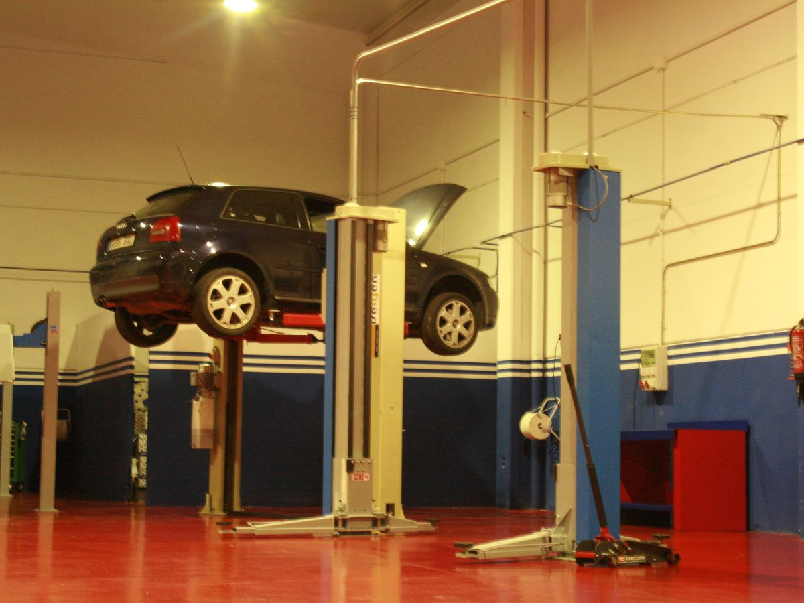
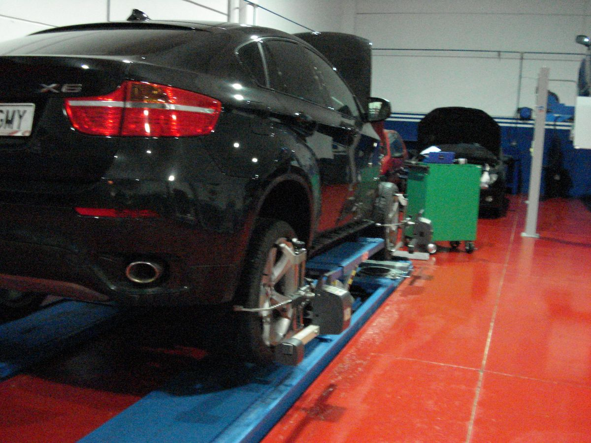
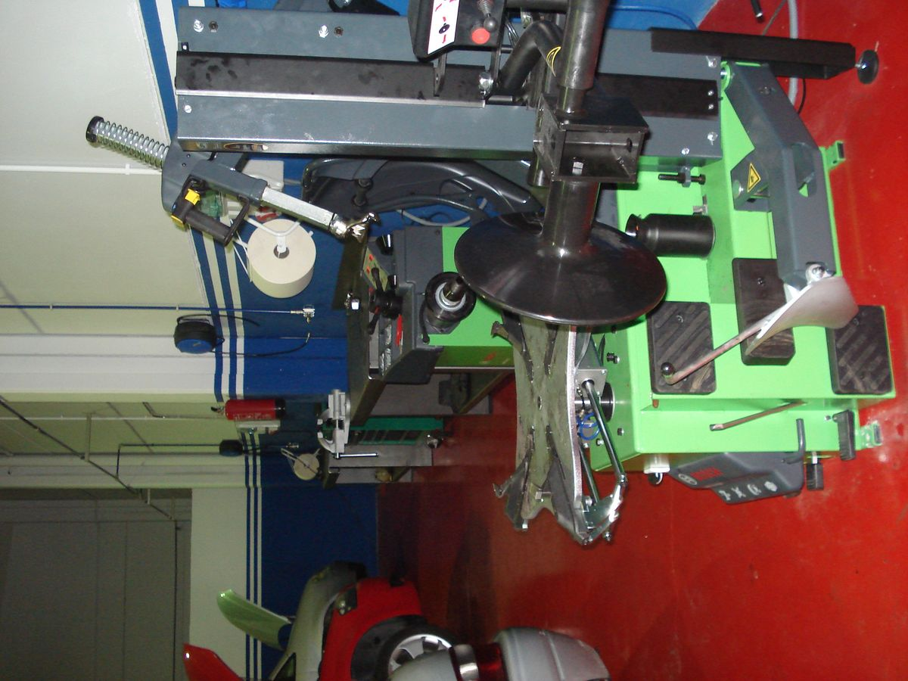
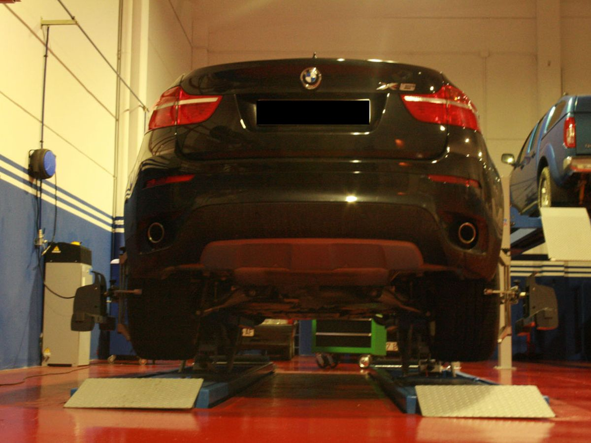

Electromecánica Oskiauto
Servicios
ELECTROMECANICA OSKIAUTO ofrece un servicio de alta calidad reparando automóviles de todas las marcas. Contamos con técnicos especialistas para hacer frente a las exigencias que los vehículos de actualidad presentan.
Revisión y Mantenimiento

Las revisiones y mantenimientos que se realizan en los elementos del automóvil son operaciones imprescindibles que contribuyen a evitar averías costosas. En ellas se sustituyen los elementos que se han deteriorado debido al desgaste normal del uso del vehículo. Los más comunes son: aceite, filtros, pastillas y discos de freno, correas, distribución, neumáticos, etc...
Además de estas sustituciones, la revisión del coche se compone de otro tipos de controles: niveles de los líquidos, estado de las luces, presión de neumáticos (incluido el de repuesto), holguras, desgaste de frenos, fugas de aceite, etc...
En Oskiauto, para los mantenimientos y revisiones realizamos la totalidad de operaciones (sustituciones y controles) necesarias en función de los kilómetros recorridos por tu vehículo. Esto es así, ya que disponemos de los listados con las operaciones recomendadas por el fabricante de tu coche para cada revisión. Todo esto hace que tengamos un servicio de excelente calidad a un mejor precio.
Pastillas y Discos

Un freno es un dispositivo utilizado para detener o disminuir el movimiento de algún cuerpo, generalmente, un eje, árbol o tambor.
Embrague

El embrague es un sistema que permite tanto transmitir como interrumpir la transmisión de una energía mecánica a su acción final de manera voluntaria. En un automóvil, por ejemplo, permite al conductor controlar la transmisión del par motor desde el motor hacia las ruedas.
Correa de Distribución

La correa de distribución, banda de distribución o dentada, es uno de los más comunes métodos de transmisión de la energía mecánica entre un piñón de arrastre y otro arrastrado, mediante un sistema de dentado mutuo que posee tanto la correa como los piñones, impidiendo su deslizamiento mutuo. Se emplea muy frecuentemente en motores Otto y diésel de 4 tiempos entre el cigüeñal y el árbol de levas, en motores de motocicletas y maquinaria industrial, de forma general, es una correa de goma que normalmente enlaza un generador de movimiento con un receptor de la misma por medio de poleas o piñones
¿Revisamos tu vehículo?
Contacto y ubicación